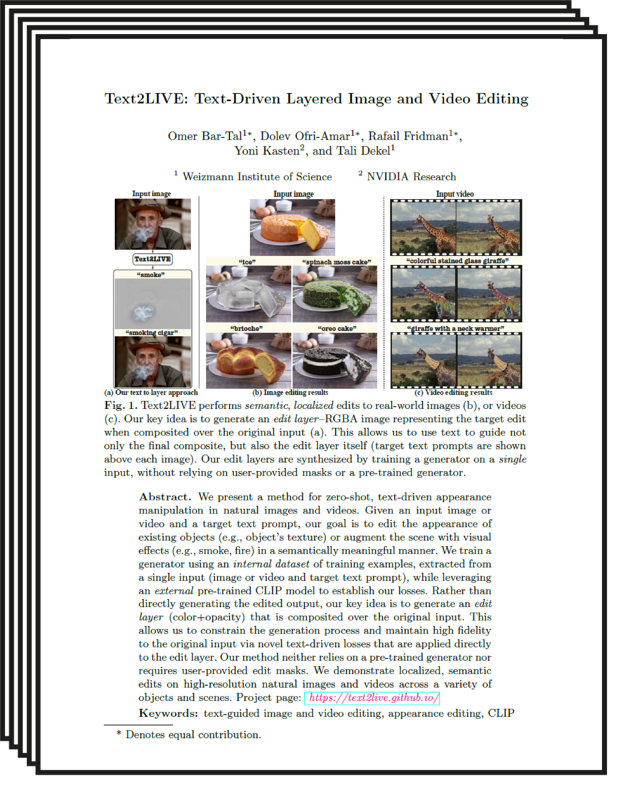
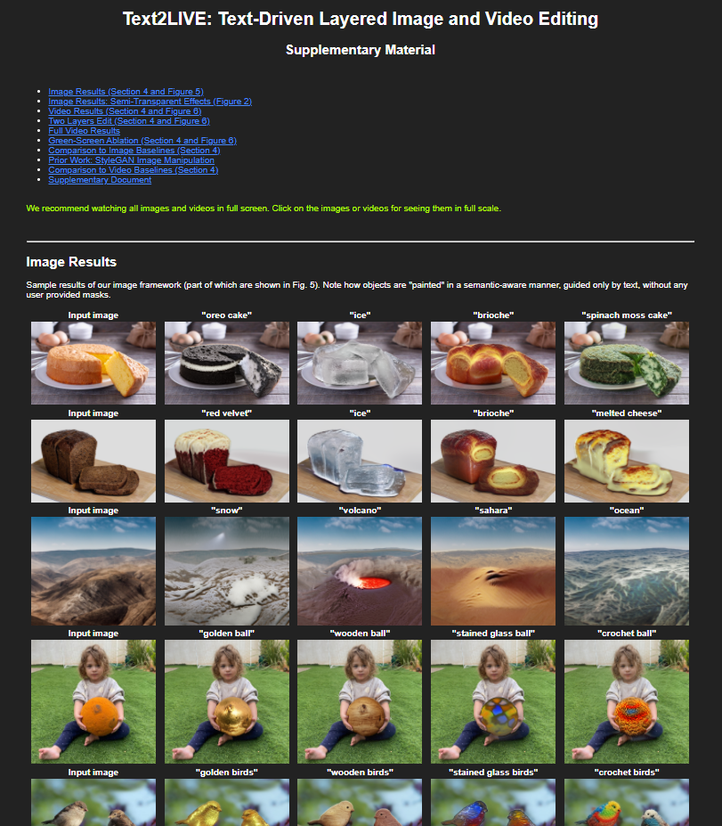

Text2LIVE: Text-Driven Layered Image and Video Editing
| ECCV 2022 Oral |
| 1 Weizmann Institute of Science |
| 2 NVIDIA Research |
| | Paper | Supplementary Material | Code | |
Abstract
We present a method for zero-shot, text-driven appearance manipulation in natural images and videos. Specifically, given an input image or video and a target text prompt, our goal is to edit the appearance of existing objects (e.g., object's texture) or augment the scene with new visual effects (e.g., smoke, fire) in a semantically meaningful manner. Our framework trains a generator using an internal dataset of training examples, extracted from a single input (image or video and target text prompt), while leveraging an external pre-trained CLIP model to establish our losses. Rather than directly generating the edited output, our key idea is to generate an edit layer (color+opacity) that is composited over the original input. This allows us to constrain the generation process and maintain high fidelity to the original input via novel text-driven losses that are applied directly to the edit layer. Our method neither relies on a pre-trained generator nor requires user-provided edit masks. Thus, it can perform localized, semantic edits on high-resolution natural images and videos across a variety of objects and scenes.
Semi-Transparent Effects
Text2LIVE successfully augments the input scene with complex semi-transparent effects without changing irrelevant content in the image.
Paper
|  |
Text2LIVE: Text-Driven Layered Image and Video Editing |
Supplementary Material
|  |
Code
|
[code] |
Bibtex
Acknowledgments
We thank Kfir Aberman, Lior Yariv, Shai Bagon, and Narek Tumanyan for their insightful comments. We thank Narek Tumanyan for his help with the baselines comparison.